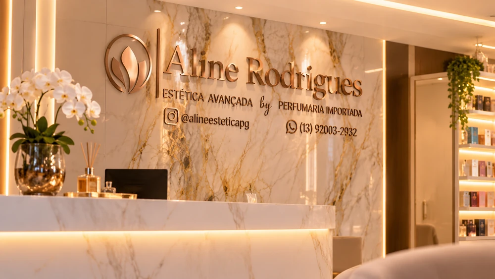
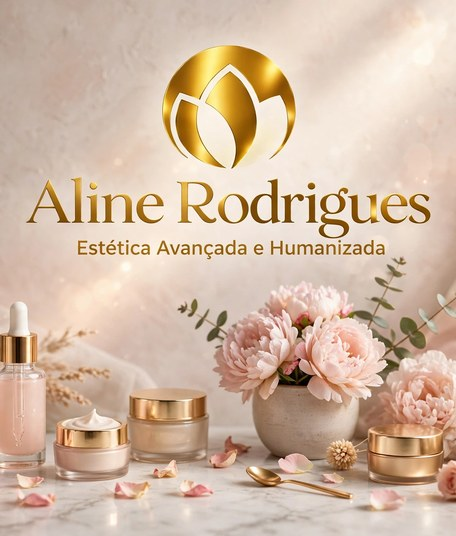
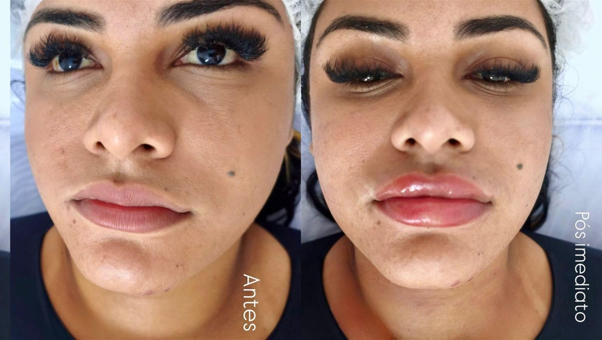
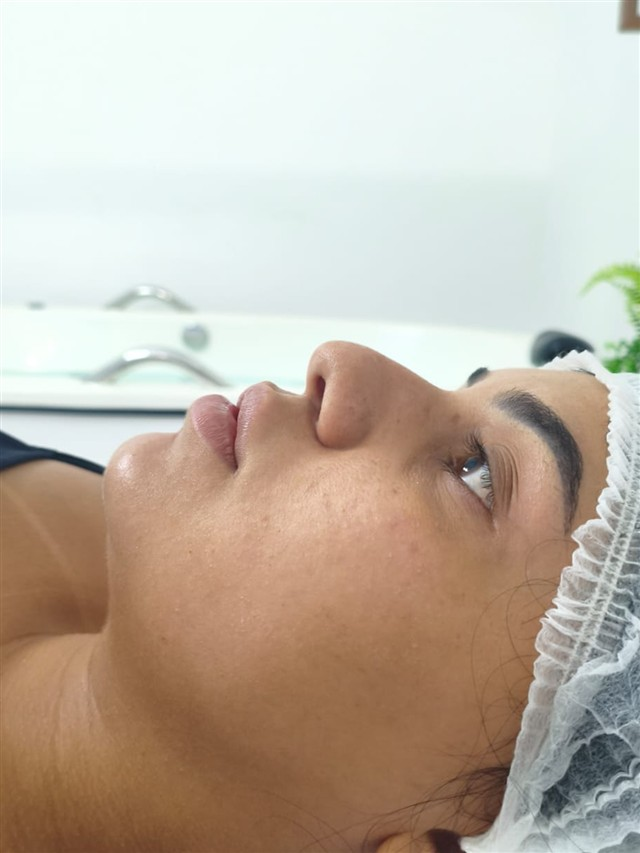
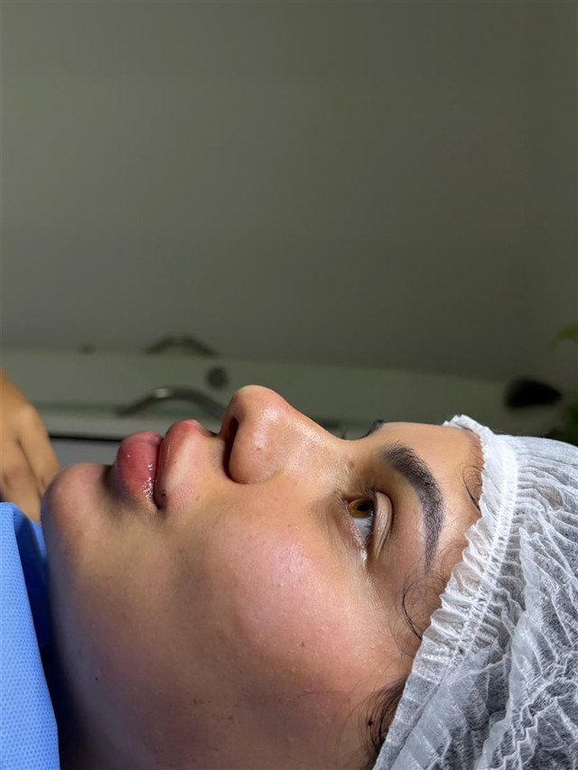
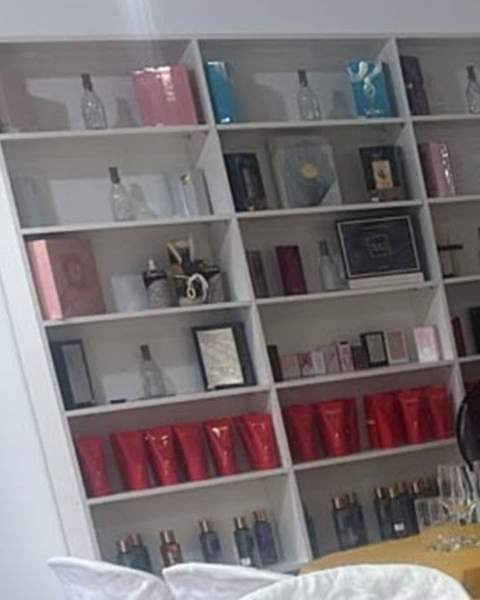

Acolhimento
Você é recebida pelo nome, com hora marcada e sem pressa. A escuta vem antes de qualquer indicação.
Aline Rodrigues
Estética & Perfumaria
Um espaço para você.
Estética humanizada em Praia Grande
Escuta antes de qualquer agulha, avaliação antes de qualquer plano. Um espaço próprio onde o seu tempo define o ritmo do cuidado.

Técnica avançada, toque humano.
Imagens reais do espaço e do acervo · Aline Rodrigues
Beleza não é sobre parecer outra pessoa.
É sobre se reconhecer — com mais leveza, saúde e confiança.

02 · A profissional
Nenhum procedimento chega antes dessa ordem. O que se define ali é o que faz sentido para o seu rosto, a sua pele e o seu tempo — não um protocolo de catálogo.
Formação e registro profissional são apresentados pela própria Aline em seus canais oficiais e confirmados no atendimento.
Você é recebida pelo nome, com hora marcada e sem pressa. A escuta vem antes de qualquer indicação.
Nenhum procedimento é empurrado. O plano pode ser dividido em etapas, no ritmo que você aceitar.
Produtos e técnicas escolhidos pelo resultado natural — a régua é você se reconhecer no espelho.
Quem já sentiu
“Me senti cuidada em cada detalhe, como nunca antes em uma clínica. O ambiente é leve e o resultado, incrível.”
“Profissionalismo com muito carinho. Saio de cada sessão renovada, física e emocionalmente.”
“Um espaço que respeita o meu tempo e as minhas dúvidas. Recomendo de olhos fechados.”
03 · Explore os cuidados
Pele, lábios, rosto, olhar e corpo — com o mapa como ponto de partida e o catálogo completo logo abaixo. A indicação depende sempre de avaliação individual.
Limpeza de peleR$ 150
Peeling facialValor informado na avaliação
Pele
Conheça as possibilidades de cuidado para a pele e entenda como a avaliação orienta o atendimento.
O que se conversa nesta área
A pele é o ponto de partida.
Ilustração conceitual do rosto — não é uma paciente e não indica técnica, medida ou resultado.
Catálogo
Nenhum cuidado encontrado com esse termo.
04 · Registros
Registros divulgados pela própria Aline, apresentados com as informações de origem e contexto que a imagem não mostra.

Antes → Pós imediatoA legenda é da própria publicação: o segundo registro é imediato — com edema inicial, não o resultado definitivo.

Antes
DepoisLegenda publicada pela clínica: “resultado real de harmonização facial”. Resposta individual — de uma pessoa, não uma expectativa.
Antes e pós publicados pela clínica. A imagem não traz rótulos na moldura — por isso o contexto fica aqui, não sobre o corpo da paciente.
Coleções do acervo
Em movimento
Vídeo do acervo real, apresentado com contexto e sem promessa de resultado.
05 · O atendimento
É a sequência real do que acontece quando você agenda. Saber em que ponto você está muda a forma como o resultado é percebido.
Toque em uma etapa para ver o que acontece nela.
Explore o rosto
Toque em uma região para conhecer os cuidados possíveis.
06 · Investimento
Os valores ao lado são os publicados pela clínica — não são promoção nem ponto de partida artificial. Servem para você chegar na conversa já sabendo de quanto estamos falando.
limpeza de pele · o cuidado mais procurado para começar
Podem ser atualizados. Produtos, número de seringas e necessidade de retoque são definidos na avaliação — quando o procedimento não tem preço único publicado, ele é informado antes de você aceitar qualquer plano.
07 · Desejo & confiança
A perfumaria importada faz parte do mesmo espaço e do mesmo cuidado: é a etapa em que você escolhe como quer sair. Nada de vitrine separada — a boutique fica ali, ao lado da recepção.
No mesmo endereçoA boutique integra o espaço de atendimento.
Escolha com calmaConsulte disponibilidade e opções com a Aline.
Sem catálogo inventadoMarcas, preços e estoque são confirmados no atendimento.

08 · Antes de vir
Respostas gerais para ajudar você a se preparar. Condições específicas são conversadas na avaliação.
Você chama a Aline pelo WhatsApp, conta o que deseja conhecer e recebe as orientações para dar o próximo passo.
A avaliação individual é parte da jornada apresentada pela marca. Ela orienta a conversa sobre possibilidades, cuidados e limitações.
Não. As áreas e o catálogo organizam a conversa; a indicação depende de avaliação feita pela profissional responsável.
O site utiliza o material enviado e publicado pela clínica. A divulgação de novos registros deve respeitar autorização específica e a dignidade de cada pessoa.
Use o botão da perfumaria para preparar uma mensagem. A Aline confirma marcas, opções e disponibilidade no atendimento.
Av. Presidente Kennedy, 13049 — Caiçara, Praia Grande (SP), CEP 11707-000. A seção Chegar até aqui traz o mapa, os horários e os canais diretos.
A seção Investimento publica os valores divulgados pela clínica para injetáveis, bioestimuladores, fios, harmonização glútea e limpeza de pele. Cuidados sem preço único publicado são informados na avaliação, antes de você aceitar qualquer plano.
De segunda a sábado, das 09h às 18h. Aos domingos a clínica não abre. Todo atendimento é com hora marcada.
O site ajuda a preparar a conversa, mas não consulta agenda em tempo real. Os horários são confirmados diretamente com a Aline.
09 · Preparar a visita
Conte o que você quer conhecer, como pretende chegar e revise uma mensagem personalizada antes de abrir o WhatsApp.
Sem envio automático. Nada sai do seu celular sem você revisar.
Segunda a sábado · 09h às 18h
Domingos não abrimos
Atendimento com hora marcada
Endereço, horários e canais publicados no site oficial da clínica.
Estética & perfumaria · Praia Grande
Beleza que revela. Autoestima que floresce.